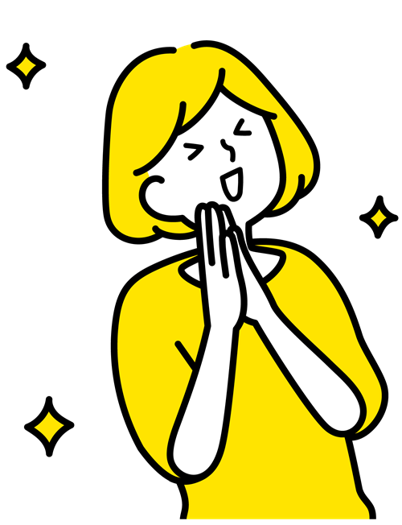

「好き」を見つけ、
深めていく4年間を。
大学は、答えを覚える場所ではなく、自分で問いを立てる場所です。青葉女子大学では、少人数の学びの中で先生や仲間と対話しながら、あなたの関心を一生の力へと育てていきます。キャンパスで皆さんにお会いできることを楽しみにしています。
学長 ○○ ○○仮
大学は、答えを覚える場所ではなく、自分で問いを立てる場所です。青葉女子大学では、少人数の学びの中で先生や仲間と対話しながら、あなたの関心を一生の力へと育てていきます。キャンパスで皆さんにお会いできることを楽しみにしています。
学長 ○○ ○○仮
自ら考え、他者を思いやり、行動する。
与えられた答えに満足せず、自分の言葉で問いを立て、根拠をもって考える力を育てます。
異なる背景をもつ人と対話し、相手の立場に立って考える姿勢を大切にしています。
学んだことを地域や社会の中で試し、周りの人とともに一歩を踏み出す力を養います。
仮年号・内容はダミーです。
○○○○
青葉女学校として創立
○○○○
青葉女子大学 開学（文学部）
○○○○
生活科学部 設置
○○○○
人間科学部 設置
○○○○
国際学部 設置、ラーニングコモンズ開設
入学直後から卒業まで、キャリアセンターとゼミの先生が一緒に将来を考えます。
キャリア入門の授業で、興味や得意を言葉にします。
卒業生との交流会や企業見学で、働くイメージを広げます。
インターンシップや資格講座で、実践の力を身につけます。
個別面談と面接練習で、進路決定までしっかり伴走します。
